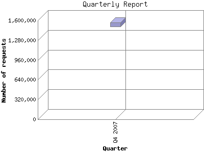

The Quarterly Report shows total activity on your site for each quarter of a
year. Remember that each page hit can result in several server requests as the
images for each page are loaded.
Note: Most likely, the first and
last quarters will not represent a complete quarter's worth of data, resulting
in lower hits.

| Quarter | Number of requests | Number of page requests | |
|---|---|---|---|
| 1. | Q4 2007 | 1,536,595 | 1,431 |
Most active quarter Q4 2007 : 1,431 pages sent. 1,536,595 requests handled.
Quarterly average: 1,431 pages sent. 1,536,595 requests handled.
This report was generated on November 7, 2007 07:33.
Report time frame October 8, 2007 00:05 to November 7, 2007 00:19.
| Web statistics report produced by: analog 6.0 / Report Magic 2.21 |